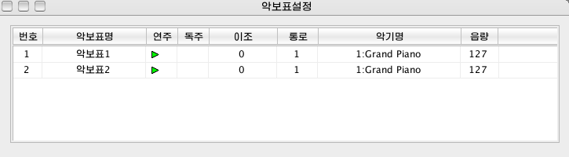
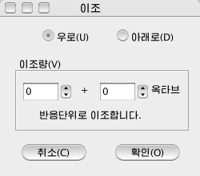
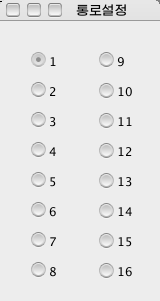

은방울의 창문\<악보표설정>창문
표준도구띠에 있는 <악보표설정>단추 를 누르거나 <보기\도구띠\악보표설정>을 선택하면 <악보표설정>창문이 표시됩니다.
를 누르거나 <보기\도구띠\악보표설정>을 선택하면 <악보표설정>창문이 표시됩니다.
<악보표설정>창문에서는 악보표별로
MIDI통로와 연주악기, 음량, 연주, 독주를 설정할수 있으며 필요에 따라 악보표의 이조연주도 진행할수 있습니다.

이 항목에서는 악보표의 이름을 입력합니다. 이것을 찰칵하여 악보표의 이름을 입력하면 악보화면에서 해당 악보표앞에 이름이 표기됩니다.
이 항목에서는 연주하려는 악보표를 선택할수 있습니다. 악보표별로 연주표식을 찰칵하여 연주하는가 안하는가를 설정할수 있으며 <연주>항목단추를 누르면 모든 연주표식을 한번에 설정할수 있습니다.
이 항목에서는 선택한 악보표만 연주(독주)할수 있습니다. 하나의 악보표에서 독주표식을 누르면 다른 악보표의 연주표식은 비동작상태로 되며 연주하지 않게
됩니다. <독주>항목단추를 누르면 모든 독주표식을 한번에 설정할수 있습니다.
이 항목에서는 필요에 따라 악보표의 연주조성을 변경할수 있습니다. 이것을 마우스로 누르면
<이조>대화창이 표시됩니다. 여기서
이조하려는 음정을 설정합니다.

이 항목에서는 악보표별로 출력포구의
MIDI통로를 선택합니다. 이것을 마우스로 누르면 <통로설정>대화창이 표시됩니다. 여기서 필요한 통로를 선택합니다.

같은 통로에 서로 다른 악기를 설정하면 연주시에 악기음색이 정확히 울리지 않습니다.
이 항목에서는 악보표별로 악기를 선택합니다. 이것을 마우스로 누르면 <악기설정>대화창이 표시됩니다.
이 항목에서는 악보표별로 음량을 조절합니다. 이 항목의 조절단추를 마우스로 마우스끌기하여 음량을 임의로 조절할수 있습니다.